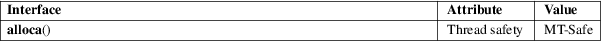

alloca − allocate memory that is automatically freed
Standard C library (libc, −lc)
#include <alloca.h>
void *alloca(size_t size);
The alloca() function allocates size bytes of space in the stack frame of the caller. This temporary space is automatically freed when the function that called alloca() returns to its caller.
The alloca() function returns a pointer to the beginning of the allocated space. If the allocation causes stack overflow, program behavior is undefined.
For an explanation of the terms used in this section, see attributes(7).

None.
PWB, 32V.
The alloca() function is machine- and compiler-dependent. Because it allocates from the stack, it’s faster than malloc(3) and free(3). In certain cases, it can also simplify memory deallocation in applications that use longjmp(3) or siglongjmp(3). Otherwise, its use is discouraged.
Because the space allocated by alloca() is allocated within the stack frame, that space is automatically freed if the function return is jumped over by a call to longjmp(3) or siglongjmp(3).
The space allocated by alloca() is not automatically deallocated if the pointer that refers to it simply goes out of scope.
Do not attempt to free(3) space allocated by alloca()!
By necessity, alloca() is a compiler built-in, also known as __builtin_alloca(). By default, modern compilers automatically translate all uses of alloca() into the built-in, but this is forbidden if standards conformance is requested (−ansi, −std=c*), in which case <alloca.h> is required, lest a symbol dependency be emitted.
The fact that alloca() is a built-in means it is impossible to take its address or to change its behavior by linking with a different library.
Variable length arrays (VLAs) are part of the C99 standard, optional since C11, and can be used for a similar purpose. However, they do not port to standard C++, and, being variables, live in their block scope and don’t have an allocator-like interface, making them unfit for implementing functionality like strdupa(3).
Due to the nature of the stack, it is impossible to check if the allocation would overflow the space available, and, hence, neither is indicating an error. (However, the program is likely to receive a SIGSEGV signal if it attempts to access unavailable space.)
On many systems alloca() cannot be used inside the list of arguments of a function call, because the stack space reserved by alloca() would appear on the stack in the middle of the space for the function arguments.
brk(2), longjmp(3), malloc(3)